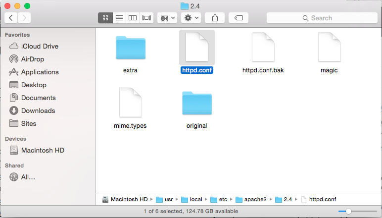

Proxy Ghost with Homebrew Apache
I don't know if you're like me, but I'm lazy. As such I find adding ports to URLs to be quite tedius, so the fact that Ghost runs on a non-standard web port (:2368 as opposed to :80) bugs me. I know it's so that it can run in userspace and not colide with any other services, but still. So in this post we'll outline how to fix that.
This outline should work for any version of Apache but I'm using homebrew Apache 2.4 using the --with-privileged-ports switch to run on port 80 but Apache can be running on any port. If you're looking for how to install Apache I've written about it before here.
Enable Apache Mods
We need to enable 2 modules to allow Ghost to be proxied by Apache, mod_proxy (which enables proxy in general) and mod_proxy_http (which enables HTTP proxy specifically).
Navigate to your httpd.conf file located at /usr/local/etc/apache2/2.4/ and open it with your favorite editor.

Locate the lines for proxy_module and proxy_http_module and uncomment them by removing the # at the beginning of the line so that:
#LoadModule proxy_module libexec/mod_proxy.so
becomes:
LoadModule proxy_module libexec/mod_proxy.so
The snippet of that whole section should look something like this:
#LoadModule remoteip_module libexec/mod_remoteip.so
LoadModule proxy_module libexec/mod_proxy.so
#LoadModule proxy_connect_module libexec/mod_proxy_connect.so
#LoadModule proxy_ftp_module libexec/mod_proxy_ftp.so
LoadModule proxy_http_module libexec/mod_proxy_http.so
#LoadModule proxy_fcgi_module libexec/mod_proxy_fcgi.so
#LoadModule proxy_scgi_module libexec/mod_proxy_scgi.so
Your settings may vary depending on other modules that you have previously enabled, the important thing is that both modules are uncommented.
Add an Apache VHost
The next step is to define an Apache VirtualHost declaration essentially stating how the proxy should work. In the same httpd.conf document scroll all the way to the bottom and add the following snippet:
<VirtualHost example.com:80>
ServerName example.com
ProxyRequests off
ProxyPass / http://127.0.0.1:2368/
ProxyPassReverse / http:/127.0.0.1:2368/
</VirtualHost>
You'll need to replace example.com with the domain that you'd like to access Ghost from. If it's a localhost installation I highly suggest that you consider leveraging DNSmasq and mod_vhost_alias as well as this works well with that solution as well. If you want more information about localhost development I've written previously about it here.
My VHost looks like this:
<VirtualHost ghost.localhost:80>
ServerName ghost.localhost
ProxyRequests off
ProxyPass / http://127.0.0.1:2368/
ProxyPassReverse / http:/127.0.0.1:2368/
</VirtualHost>
Restart Apache
After you've finished editing your config file save it and then restart Apache with this command:
sudo httpd -k restart
This will immediately restart your Apache server, even if you're using a LaunchAgent to start it on load or log in.
Now you can visit the URL you declared in your Apache configuration and access your Ghost instance. Please note that you can still visit it from the old URL as well, this doesn't block access, so if Apache ever breaks you can still get to Ghost.